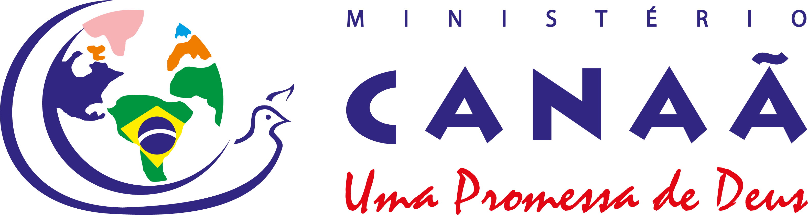

Teresina · Piauí
Venha adorar conosco.
Cultos durante a semana e aos domingos na Avenida Miguel Rosa, no bairro Vermelha. Quem chega é bem-vindo.
Programação dos Cultos
Acompanhe os cultos online
Assista pelo canal do Ministério Canaã no YouTube, de onde você estiver.
Se não houver transmissão no momento, o vídeo não carrega. Veja os cultos anteriores direto no canal.
Rádio Canaã e clima em Teresina
Rádio Canaã FM 93,5
Clima agora
Carregando a previsão…
Nossa História
Conheça como surgiu este grande projeto espiritual.
-
Fundação do Ministério Canaã
O Ministério Canaã foi fundado oficialmente em 14 de fevereiro de 2000. De forma desprendida, o pastor Jecer Goes deu início ao trabalho em uma sala do antigo Hotel Colonial, na Av. Beira Mar, em Fortaleza.
-
Primeiro culto
No primeiro culto, dois dias depois da fundação, estavam presentes menos de 30 irmãos.
-
Primeira mudança
Após 30 dias, o trabalho foi transferido para o Colégio Professora Jemina Gois, no bairro Pan Americano, e os cultos eram realizados na quadra da escola.
-
Segunda mudança
Passados três meses, a igreja passou a ser sediada em um prédio alugado na Av. do Imperador (esquina com a Av. Domingos Olímpio), no Centro de Fortaleza. Todos os que faziam parte daquela obra inicial ficaram “orgulhosos”, pois para eles o imóvel era grande e proporcionava melhores condições de realizar um bom trabalho.
-
Sede na José Bastos
Com o crescimento da obra, foi alugado o antigo prédio da Antártica, na avenida José Bastos. Foi ali que os milagres começaram a acontecer e Deus trouxe um grande avivamento.
-
Início da construção do Santuário
Deus abriu as portas do céu e cumpriu a promessa que fez ao pastor Jecer há muitos anos. Foi adquirido um grande terreno no bairro Passaré, onde começou a construção do Santuário Canaã.
-
Maior Templo Evangélico do Nordeste
Hoje o Santuário Canaã é o maior templo evangélico do Nordeste, com capacidade para 12.000 pessoas. O Ministério Canaã conta atualmente com 120 igrejas anunciando o Evangelho pelas plataformas digitais, pela rádio e pelo evangelismo nas ruas, bairros, cidades e municípios.
Endereço
Resumo da semana
Terça e quinta às 19h, quarta às 16h, e domingo em dois momentos: Escola Bíblica às 8h30 e Adoração às 17h45.